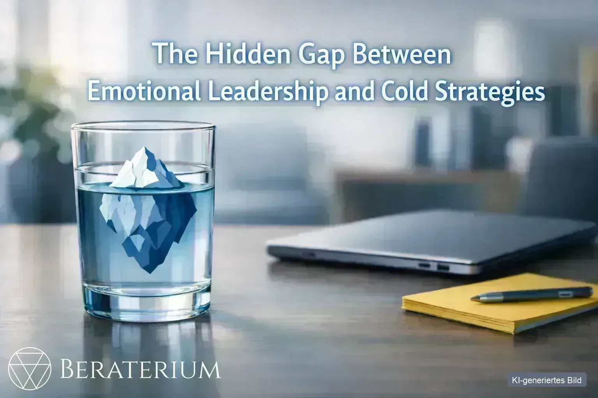

Mehr für Startups →Das wahre Top-Risiko war ein blinder Fleck
Finanzierung und Markt hatte er im Blick. „Zwingend zuerst" war am Ende ein anderes Feld: die Qualität seiner Analyse- und Entscheidungsmodelle. Ergebnis: ein priorisiertes Risikoportfolio statt einer endlosen Liste.
Risikomanagement & Business Consulting
Konzern-Risikomanagement. Für alle zugänglich.
Beraterium macht professionelles Risikomanagement für Startups, KMU und Solo-Selbstständige verständlich, bezahlbar und sofort umsetzbar. Aus Bauchgefühl wird Klarheit – aus Klarheit wird Handlungsfähigkeit.
- 20 Jahre Erfahrung aus Konzern, KMU & Start-up
- 3 Ebenen Gefahren vor Risiken — kein blinder Fleck
- in € jedes Risiko als Eurobetrag — keine Ampelfarben
- 2 Garantien Relevanz- & Nutzen-Garantie
Für wen wir arbeiten
Für jede Größe der richtige BlindSpot-Check
Konzerne haben ganze Abteilungen für Risikomanagement. Sie haben uns. Der BlindSpot-Check ist unsere strukturierte Risikoanalyse und der erste Schritt: Wir machen Ihre blinden Flecken sichtbar und ranken sie in der Risiko-Matrix nach Schadensausmaß und Eintrittswahrscheinlichkeit. Wählen Sie, was zu Ihrer Situation passt.
-
Startups
Schnelles Wachstum, viele Baustellen. Wir zeigen Ihnen in 4 Wochen, welche Risiken Sie ausbremsen könnten – bevor es teuer wird.
BlindSpot-Check für Startups → -
KMU & Mittelstand
Kapital erhalten, Entscheidungen absichern, Zukunft sichern. Risikomanagement und HR-Analyse, die zu Ihrem Betrieb passen – nicht zu einem Konzern.
BlindSpot-Check für KMU → -
Solo-Selbstständige
Sie sind Ihr Unternehmen. Fällt Ihre Person aus, steht alles. In 2 Wochen wissen Sie, wo Sie wirklich verletzlich sind.
BlindSpot-Check für Solo →
Warum das wichtig ist
Viele Unternehmer wissen, dass Risiken existieren. Kaum jemand weiß, welche die größten sind.
Cyber ist 2026 das Risiko Nr. 1 in Deutschland (Allianz Risk Barometer). Doch das gefährlichste Risiko ist meist das, das niemand auf dem Schirm hat. Klassische Methoden dafür sind für Konzerne gemacht: komplex, theoretisch, aufwendig. Beraterium ist aus dieser Lücke entstanden — mit einer Methode, die gemeinsam mit Ihren Mitarbeitenden in kurzer Zeit ein klares, in Euro bewertetes Bild Ihrer größten Risiken liefert. Verständlich, praxisnah, ohne Bürokratie.
Unsere Methode
In drei Schritten von der Gefahr zur Handlung
-
Gefahren sammeln
In einem Gefahrenkatalog mit drei Ebenen erfassen wir neutral, was Ihrem Unternehmen schaden kann – ohne vorschnelle Bewertung.
-
Risiken in Euro bewerten
„Stell dir vor, es ist bereits passiert." Wir schätzen den möglichen Schaden in Euro und die Eintrittswahrscheinlichkeit – und rechnen an, was Sie heute schon dagegen tun.
-
Die richtigen Maßnahmen
Wir suchen nicht die meisten, sondern die wenigen Maßnahmen mit der größten Wirkung – und begleiten die Umsetzung.
Ihr Risiko liegt bei uns
Doppelte Garantie
Zwei klare Versprechen – wenn wir nicht liefern, erstatten wir den vollen Betrag.
-
Relevanz-Garantie
„Wir finden kein relevantes Risiko? Geld zurück."
Identifiziert die Analyse kein einziges Risiko mit relevanter Schadenshöhe (Schwelle vorab gemeinsam definiert), erstatten wir den vollen Betrag.
-
Nutzen-Garantie
„Kein messbarer Nutzen? Geld zurück."
Wir legen vor dem Start gemeinsam 3–5 Nutzen-Kriterien fest. Wird am Ende keines erfüllt, bekommen Sie den vollen Betrag zurück. Ohne Diskussion.
Wer dahintersteckt
Ein Team mit vielen Perspektiven, ein Ziel: Ihre Sicherheit
-

Till Manfred Blania
Verbindet Wirtschaft, Personalwesen und Risikomanagement mit Erfahrung aus eigenen Start-ups. Bringt Führungskräfte und Mitarbeitende zusammen, damit Lösungen entstehen, die wirklich funktionieren.
-
Peter Münstermann
Moderiert offene Gespräche über Risiken, Chancen und Lösungen – strukturiert, aber menschlich. Macht Risikomanagement greifbar, verständlich und praktisch umsetzbar.
-
Aleksandra Polosukhina
Marketing- und PR-Expertin mit über sieben Jahren Erfahrung – stärkt Teams durch clevere Kommunikation und gezieltes Employer Branding.
-
Torsten Walter Helbig
Seit über 31 Jahren unabhängiger Finanzberater – entwickelt robuste Cashflow-Architekturen für nachhaltige Sicherheit und finanzielle Freiheit.
-
Joachim Lau
Bringt Geschäftsführung und Mitarbeiter zusammen, um Optimierungen umzusetzen, die im Arbeitsalltag funktionieren – von der Modebranche bis zur IT-Modernisierung.
Nach der Analyse
Wir liefern keine Analyse zum Ablegen – sondern Lösungen zum Umsetzen.
Geprüfte Experten statt Google-Roulette — Zugang nur über Empfehlung oder Bewerbung. Über RisikoRadar bringen wir bei Bedarf die richtigen Menschen zusammen. Kunden erhalten einen kostenfreien Jahreszugang. Beraterium bleibt die Klammer.
RisikoRadar entdecken →Einblicke
Experten-Einblicke von Beraterium
Kurze, praxisnahe Artikel zu Risiko, Führung und Entscheidungen — geschrieben vom Beraterium-Team für Gründer, KMU und Selbstständige.
-

KMUEmotionale Führung und das Eisbergmodell: Was unter der Oberfläche Unternehmensrisiken steuert
Das Eisbergmodell aus der Folge meint nicht „schlechte Unternehmer“, sondern: Sichtbar gearbeitet wird oft mit dem kleinen oberen Teil – Wissen,…
Weiterlesen → -
 KMU
KMUFamiliennachfolge und Generationskonflikt: Was nach der formalen Übergabe alles schiefgehen kann
Viele Konflikte nach der Nachfolge sitzen nicht im Gesellschaftsvertrag, sondern in Rollen, Identität und unklarer Führung – das ist ein…
Weiterlesen → -
 Startup
StartupGesundheit als Unternehmensrisiko: Körper, Team und die kleinen Stellschrauben
Wer nur auf Prozesse und Technik schaut, übersieht oft das größte operative Risiko: ausfallende oder erschöpfte Menschen.
Weiterlesen →
Aus der Praxis
Was der BlindSpot-Check sichtbar macht
Anonymisierte Beispiele aus echten Projekten – das größte Risiko liegt fast nie dort, wo man es vermutet.
Kennen Sie Ihre drei größten Risiken?
30 Minuten, kostenlos, kein Sales-Pitch. Sie gehen mit echtem Wissen raus – egal, wie Sie sich danach entscheiden.
Kostenloses Erstgespräch buchen